СП 427.1325800.2018 «Каменные и армокаменные конструкции. Методы усиления»
О документе: разработчики, утверждение, регистрация, ключевые слова
Издание официальное
Москва 2018
СП 427.1325800.2018
1 ИСПОЛНИТЕЛЬ - АО «НИЦ «Строительство» -ЦНИИСК им. В.А. Кучеренко
2 ВНЕСЕН Техническим комитетом по стандартизации ТК 465 «Строительство»
3 ПОДГОТОВЛЕН к утверждению Департаментом градостроительной деятельности и архитектуры Министерства строительства и жилищнокоммунального хозяйства Российской Федерации (Минстрой России)
4 УТВЕРЖДЕН приказом Министерства строительства и жилищнокоммунального хозяйства Российской Федерации от 19 декабря 2018 г. № 829/пр и введен в действие с 20 июня 2019 г.
5 ЗАРЕГИСТРИРОВАН Федеральным агентством по техническому регулированию и метрологии (Росстандарт)
В случае пересмотра (замены) или отмены настоящего свода правил соответствующее уведомление будет опубликовано в установленном порядке. Соответствующая информация, уведомление и тексты размещаются также в информационной системе общего пользования -на официальном сайте разработчика (Минстрой России) в сети Интернет
© Минстрой России, 2018
Настоящий нормативный документ не может быть полностью или частично воспроизведен, тиражирован и распространен в качестве официального издания на территории Российской Федерации без разрешения Минстроя России
Дата введения - 2019-06-20
УДК 69+624.014.2.04(083.74) ОКС 91.080.30
Ключевые слова: каменные конструкции, усиление, полимерные композиты, расчеты по прочности, по образованию трещин и по деформациям, конструктивные решения
| АО «НИЦ «Строительство» Генеральный директор | А.В. Кузьмин |
|---|---|
| ЦНИИСК им. В.А. Кучеренко АО «НИЦ «Строительство» Директор д.т.н., профессор | И.И. Ведяков |
| Руководитель разработки заведующий лабораторией, к.т.н. | М.К. Ищук |
Введение
6 ВВЕДЕН ВПЕРВЫЕ
Настоящий свод правил разработан с учетом требований федеральных законов от 27 декабря 2002 г. № 184-ФЗ «О техническом регулировании», от 22 июня 2008 г. № 123-ФЗ «Технический регламент о требованиях пожарной безопасности», от 30 декабря 2009 г. № 384-ФЗ «Технический регламент о безопасности зданий и сооружений».
Разработка свода правил выполнена авторским коллективом АО «НИЦ «Строительство» - ЦНИИСК им. В.А. Кучеренко (руководитель разработки - канд. техн. наук М.К. Ищук , канд. техн. наук А.В. Грановский, канд. техн. наук О.К. Гогуа ; Е.М. Ищук, И.Г. Фролова, В.А. Черемных, Х.А. Айзятуллин ).
1Область применения
2Нормативные ссылки
В настоящем своде правил использованы нормативные ссылки на следующие документы:
ГОСТ 4.206 -83 Система показателей качества продукции. Строительство. Материалы стеновые каменные. Номенклатура показателей
ГОСТ 4.210 -79 Система показателей качества продукции. Строительство. Материалы керамические отделочные и облицовочные. Номенклатура показателей
ГОСТ 4.219 -81 Система показателей качества продукции. Материалы облицовочные из природного камня и блоки для их изготовления. Номенклатура показателей
СП 15.13330.2012 «СНиП II-22-81* Каменные и армокаменные конструкции» (с изменениями № 1, № 2)
СП 16.13330.2017 «СНиП II-23-81* Стальные конструкции» (с изменением № 1)
СП 63.13330.2012 «СНиП 52-01-2003 Бетонные и железобетонные конструкции. Основные положения» (с изменениями № 1, № 2, № 3)
СП 327.1325800.2017 Стены наружные с лицевым кирпичным слоем. Правила проектирования, эксплуатации и ремонта
КАМЕННЫЕ И АРМОКАМЕННЫЕ КОНСТРУКЦИИ Методы усиления
Masonry and reinforced masonry structures Methods of strengthening
\_\_\_\_\_\_\_\_\_\_\_\_\_\_\_\_\_\_\_\_\_\_\_\_\_\_\_\_\_\_\_\_\_\_\_\_\_\_\_\_\_\_\_\_\_\_\_\_\_\_\_\_\_\_\_\_\_\_\_\_\_\_\_\_\_\_\_\_\_\_\_\_\_\_
Примечание - При пользовании настоящим сводом правил целесообразно проверить действие ссылочных документов в информационной системе общего пользования -на официальном сайте федерального органа исполнительной власти в сфере стандартизации в сети Интернет или по ежегодному информационному указателю «Национальные стандарты», который опубликован по состоянию на 1 января текущего года, и по выпускам ежемесячного информационного указателя «Национальные стандарты» за текущий год. Если заменен ссылочный документ, на который дана недатированная ссылка, то рекомендуется использовать действующую версию этого документа с учетом всех внесенных в данную версию изменений. Если заменен ссылочный документ, на который дана датированная ссылка, то рекомендуется использовать версию этого документа с указанным выше годом утверждения (принятия). Если после утверждения настоящего свода правил в ссылочный документ, на который дана датированная ссылка, внесено изменение, затрагивающее положение, на которое дана ссылка, то это положение рекомендуется применять без учета данного изменения. Если ссылочный документ отменен без замены, то положение, в котором дана ссылка на него, рекомендуется применять в части, не затрагивающей эту ссылку. Сведения о действии сводов правил целесообразно проверить в Федеральном информационном фонде стандартов.
3Термины и определения
- 3.1.1 каменная кладка
- Конструкция из природных или искусственных камней (кирпича, блоков), соединенных между собой цементным или клеевым раствором, клеевым составом или пастой.
- 3.1.2 кирпич, камни и блоки
- Полнотелые и пустотелые кладочные изделия, удовлетворяющие требованиям соответствующих нормативных документов.
- 3.1.3 усиление каменной конструкции
- Комплекс конструктивных мероприятий и технологических работ, направленных на повышение несущей способности и эксплуатационных свойств конструкции.
- 3..1.4 восстановление (ремонт) каменной конструкции
- Комплекс конструктивных мероприятий и технологических работ, направленных на восстановление несущей способности и эксплуатационных свойств конструкции, нарушенных вследствие дефектов изготовления или в процессе ее эксплуатации.
- 3.1.5 внешнее армирование (каменной конструкции)
- Установка наклеиванием на каменную конструкцию изделий заводского изготовления из полимерных композитных материалов (ламинатов) или послойное наклеивание термореактивными адгезивами изделий из непрерывного углеродного, стеклянного, базальтового или арамидного волокна (холстов, сеток и других тканых материалов) с последующим отверждением и образованием однослойного или многослойного композитного материала.
- 3.1.6 инъекция
- Усиление конструкций с помощью подачи раствора под давлением в кладку.
- 3.1.7 комплексные элементы
- Элементы каменной кладки с включением в них железобетона, работающего совместно с кладкой.
- 3.1.8 вычинка
- Восстановление кладки на участках ее разрушения новой кладкой с перевязкой со старой. 3.2 Основные буквенные обозначения величин: А - площадь сечения кладки; Аb - Abс - площадь сжатой зоны бетона; площадь сечения бетона; S СП 427.1325800.2018 СП 427.1325800.2018 Sbs,N Sbd Sw mg mk mb nn δ bd тр cs х z ---------------приложения силы; статический момент сжатой зоны бетона относительно точки приложения силы; площадь поперечного сечения полосы (бандажей) из полимерного композита толщиной δ bd и высотой hbd ; площадь участка длинной стороны hw столба, приходящаяся на одну полосу из полимерного композита высотой hbd ; коэффициент, учитывающий влияние длительного воздействия нагрузки; коэффициент условий работы кладки; коэффициент условий работы бетона; коэффициент допустимой перегрузки; толщина полимерного композита; коэффициент, учитывающий деформации ползучести; коэффициент, учитывающий процент армирования; коэффициент трения; коэффициент продольного изгиба; коэффициент продольного изгиба комплексной конструкции; высота сжатой зоны сечения; плечо внутренней пары сил при прямоугольном сечении.
4Общие требования
Правила обследования несущих строительных конструкций зданий и сооружений приведены в [2].
- от потери устойчивости формы конструкции или ее положения;
- разрушения под совместным воздействием силовых факторов и неблагоприятных влияний внешней среды (размораживания, выветривания кладки, воздействия агрессивной среды на кладку, арматуру и связи).
- от образования или чрезмерного раскрытия трещин;
- чрезмерных перемещений, прогибов, кренов.
- усилий в конструкциях от эксплуатационных нагрузок и воздействий;
- несущей способности этих конструкций.
Сопоставление значений этих величин показывает степень реальной загруженности конструкций по сравнению с ее несущей способностью.
5Материалы
При усилении конструкций из исторической кладки следует применять кладочные материалы, идентичные примененным в усиливаемой кладке. При этом возможно отличие этих материалов по габаритам и свойствам от требований соответствующих нормативных документов.
- арматуру классов А240 и В500 - для сетчатого армирования;
- арматуру классов А240, А300, В500 - для продольной и поперечной арматуры, анкеров и связей.
Для закладных деталей и соединительных накладок следует применять сталь в соответствии с СП 16.13330.
6Расчетные характеристики
Модули упругости и деформаций кладки при кратковременной и длительной нагрузке, упругие характеристики кладки, деформации усадки, коэффициенты линейного расширения и трения
Е
для кладки с продольным армированием
E
где α - упругая характеристика кладки, принимается по таблице 16 СП 15.13330.2012.
Модуль упругости кладки с сетчатым армированием, расположенным в горизонтальных растворных швах, принимают таким же, как для неармированной кладки.
Для кладки с продольным армированием упругую характеристику принимают такой же, как для неармированной кладки;
- Ru -временное сопротивление (средний предел прочности) сжатию кладки определяют по формуле
где k - коэффициент, принимаемый по таблице 1;
- R - расчетные сопротивления сжатию кладки, принимаемые по таблицам 2-10 СП 15.13330.2012 с учетом коэффициентов, приведенных в примечаниях к этим таблицам, а также в 6.10-6.15 СП 15.13330.2012.
Таблица 1
| Вид кладки | Коэффициент k |
|---|---|
| 1 Из кирпича и камней всех видов, из рваного бута и бутобетона | 2,0 |
| 2 Из крупных и мелких блоков из ячеистых бетонов | 2,2 |
Таблица 2
| Упругая характеристика α при | Упругая характеристика α при | Упругая характеристика α при | Упругая характеристика α при | Упругая характеристика α при | |
|---|---|---|---|---|---|
| Вид кладки | марках раствора | марках раствора | марках раствора | прочности раствора | прочности раствора |
| 25-200 | 10 | 4 | 0,2 | Нулевой | |
| 1 Из крупных блоков, изготовленных тяжелого и крупнопористого бетона на тяжелых заполнителях и из тяжелого природного камня (γ ≥ 1800 кг/м³ ) | 1500 | 1000 | 750 | 750 | 500 |
| 2 Из камней, изготовленных из тяжелого бетона, тяжелых природных камней и бута | 1500 | 1000 | 750 | 500 | 350 |
| 3 Из крупных блоков, изготовленных из бетона на пористых заполнителях и поризованного, крупнопористого бетона на легких заполнителях, плотного силикатного бетона и из легкого природного камня | 1000 | 750 | 500 | 500 | 350 |
| 4 Из крупных блоков, изготовленных из ячеистых бетонов: автоклавных | 750 | 750 | 500 | 500 | 350 |
| неавтоклавных | 500 | 500 | 350 | 350 | 350 |
| 5 Из камней, изготовленных из ячеистых бетонов: автоклавных | 750 | 500 | 350 | 350 | 200 |
| неавтоклавных | 500 | 350 | 200 | 200 | 200 |
| 6 Из керамических камней (кроме крупноформатных) | 1200 | 1000 | 750 | 500 | 350 |
| 7 Из кирпича керамического пластического прессования полнотелого и пустотелого из пустотелых силикатных камней, из камней, изготовленных из бетона на пористых заполнителях и поризованного, из легких природных камней | 1000 | 750 | 500 | 350 | 200 |
|---|---|---|---|---|---|
| 8 Из кирпича силикатного полнотелого и пустотелого | 750 | 500 | 350 | 350 | 200 |
| 9 Из кирпича керамического полусухого прессования полнотелого и пустотелого | 500 | 500 | 350 | 350 | 200 |
Примечания
- 1 При определении коэффициентов продольного изгиба для элементов с гибкостью l /i ≤ 28 или отношением l / h ≤ 8.
Допускается принимать значения упругой характеристики кладки из кирпича всех видов как из кирпича пластического прессования.
- 2 Приведенные в таблице (пункты 7-9) значения упругой характеристики α для кирпичной кладки распространяются на виброкирпичные панели и блоки.
- 3 Упругую характеристику бутобетона α принимают равной 2000.
- 4 Для кладки на легких растворах значения упругой характеристики α следует принимать с коэффициентом 0,7.
- 5 Упругие характеристики кладки из природных камней допускается уточнять на основе результатов экспериментальных исследований.
- 6 Для кладки из крупноформатных камней α следует принимать как для керамических камней с коэффициентом 0,7.
Упругую характеристику кладки с сетчатым армированием следует определять по формуле α
- В формулах (2) и (4) -временное сопротивление (средний предел прочности) сжатию армированной кладки из кирпича или камней при высоте ряда не более 150 мм, определяемое по формулам: sku R для кладки с продольной арматурой
для кладки с сетчатой арматурой
где μ -процент армирования кладки; для кладки с продольной арматурой
где и -соответственно площади сечения арматуры и кладки, для кладки с сетчатой арматурой определяется по 7.31 СП 15.13330.2012; s A k A
- нормативные значения сопротивления арматуры в армированной кладке, принимаемые для сталей классов А240 и А300, а для стали класса В500 - с коэффициентом условий работы 0,6 в соответствии с СП 63.13330. sn R
- а) при расчете конструкций по прочности для определения усилий в кладке при знакопеременных и малоцикловых нагружениях (для определения усилий в затяжках сводов, в слоях сжатых многослойных сечений, усилий, вызываемых температурными деформациями, при расчете кладки над рандбалками или под распределительными поясами) по формуле
где -модуль упругости (начальный модуль деформаций) кладки, определяемый по формулам (1) и (2). 0 E
- б) при определении деформаций кладки от продольных или поперечных сил, усилий в статически неопределимых рамных системах, в которых элементы конструкций из кладки работают совместно с элементами из других материалов, периода колебаний каменных конструкций, жесткости конструкций по формуле
При зависимости между напряжениями и деформациями по формуле (9) тангенциальный модуль деформаций определяется по формуле
где σ -напряжение, при котором определяется ; ν -коэффициент, учитывающий деформации ползучести кладки:
- 1,8 ν = -для кладки из керамических камней, в том числе крупноформатных, с вертикальными щелевидными пустотами (высота камня от 138 до 220 мм);
- 2,2 ν = -для кладки из керамического кирпича пластического и полусухого прессования;
- 2,8 ν = -для кладки из крупных блоков или камней, изготовленных из тяжелого бетона;
- 3,0 ν = -для кладки из силикатного кирпича, полнотелых и пустотелых камней, а также из камней, изготовленных из бетона на пористых заполнителях или поризованного и силикатных крупных блоков;
- 3,5 ν = -для кладки из мелких и крупных блоков или камней, изготовленных из автоклавных ячеистых бетонов;
- 4,0 ν = -то же, из неавтоклавных ячеистых бетонов.
Длительный модуль деформаций для различных периодов строительства и эксплуатации определяется по следующим формулам: на момент Т 1 окончания непрерывно возрастающей нагрузки
где коэффициенты для определения полных деформаций кладки на момент окончания роста нагрузки η ок и с момента окончания роста нагрузки η ок -дл равны:
где t 1 -безразмерный коэффициент, численно равный времени окончания роста нагрузки T 1.
Значения коэффициента A , характеризующего ползучесть кладки, принимают:
- из керамических камней A =0,38·10 -3 , из керамического кирпича пластического и полусухого прессования A = 0,7·10 -3 , из силикатного кирпича A = 1,4·10 -3 .
Коэффициенты С равны:
A· = 0,46 -для кладки из керамических камней;
0,7 -для кладки из керамического кирпича пластического прессования;
1,1 -для кладки из силикатного кирпича;
- 0,35 -для кладки из керамического кирпича полусухого прессования.
Деформации усадки следует принимать для кладок:
- из кирпича, камней, мелких и крупных блоков, изготовленных на силикатном или цементном вяжущем -; 4 3 10 -
- из камней и блоков, изготовленных из автоклавных ячеистых бетонов на песке и вторичных продуктах обогащения различных руд -; 4 4 10 -
- то же, из автоклавных бетонов на золе -4 6 10 -
.
7Расчет элементов конструкций по предельным состояниям первой группы (по несущей способности)
N где N -расчетное усилие;
Nf -фактическая несущая способность конструкции с учетом имеющихся в ней дефектов, определяемая по формуле
Nc -расчетная несущая способность конструкций, определяемая в соответствии с СП 15.13330 без учета понижающих факторов (коэффициентов kтс ) подстановкой в соответствующие расчетные формулы фактических значений прочности (марок) материалов, площади сечения кладки, арматуры и т. п.; kтс - коэффициент технического состояния конструкций, учитывающий снижение несущей способности каменных конструкций при наличии дефектов, трещин, повреждений, при увлажнении материалов и т. п., принимают:
- по таблице 3 - при наличии дефектов производства работ (отсутствие перевязки, пустошовка, большая толщина растворных швов);
Таблица 3
| Вид дефекта | k тс |
|---|---|
| Отсутствие перевязки рядов кладки (тычковых рядов, арматурных сеток, каркасов): | |
| в 5 - 6 рядах (40 - 45 см) | 1,0 |
| в 8 - 9 рядах (60 - 65 см) | 0,9 |
| в 10 - 11 рядах (75-80 см) | 0,75 |
| Отсутствие заполнения раствором вертикальных швов (пустошовка) | |
| При толщине горизонтальных швов более 2 см (3 - 4 шва на 1 м высоты кладки): | 0,9 |
| при марке раствора шва 75 и более | 1,0 |
| то же, 25 - 50 | 0,9 |
| то же, менее 25 | 0,8 |
- по таблице 4 - для стен, столбов, простенков при наличии вертикальных трещин, возникающих вследствие перегрузки конструкций постоянными, временными и особыми (случайными) нагрузками (рисунок 1), исключая трещины, вызванные действием горизонтальных сил (температурой, усадкой, осадкой фундаментов и т. п.);
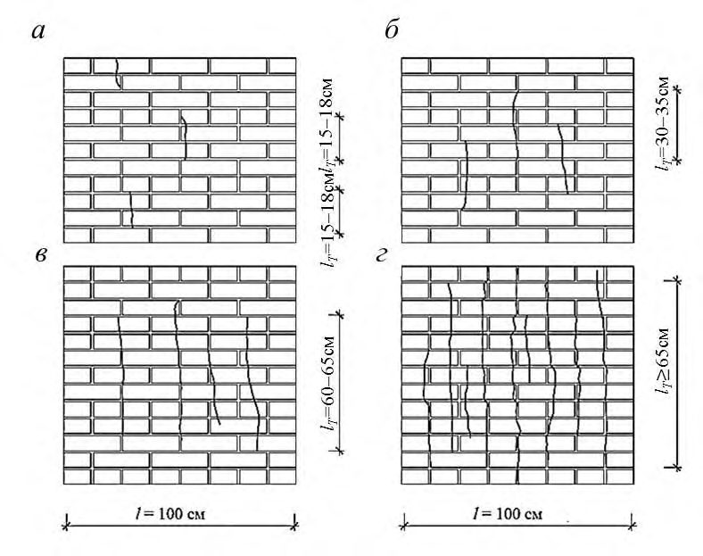
а -отдельные трещины длиной 15 -18 см; б -трещины через 25 -30 см длиной 30 -35 см; в -трещины через 20 -25 см длиной 60 -65 см; г -трещины через 15 -20 см длиной более 65 см
Рисунок 1 -Степень повреждения вертикальными трещинами каменных и армокаменных конструкций
- по таблице 5 - для кладки опор ферм, балок, перемычек, плит при наличии местных повреждений (трещин, сколов, раздробления, рисунок 2), возникающих при действии вертикальных и горизонтальных сил;
- по таблице 6 - для стен, столбов, простенков из керамического или силикатного кирпича при огневом воздействии при пожаре;
- kтс = 0,85 - для увлажненной и насыщенной водой кладки из керамического и силикатного кирпича и камней; kтс = 0,8 - из природных камней правильной формы из известняка и песчаника.
Таблица 4
| Характер повреждения кладки стен, столбов и простенков | k тс для кладки | k тс для кладки |
|---|---|---|
| неармированной | армированной | |
| Трещины в отдельных камнях | 1 | 1 |
| Волосные трещины при пересечении не более двух рядов кладки длиной 15 - 18 см | 0,9 | 1 |
| То же, при пересечении не более четырех рядов кладки длиной до 30 - 35 см при количестве трещин не более трех на 1 пог. м ширины (толщины) стены, столба или простенка То же, при пересечении не более восьми рядов кладки, длиной до | 0,75 | 0,9 |
| 60 - 65 см, трещин не более четырех на 1 пог. м ширины (толщины) стены, столба и простенка То же, при пересечении более восьми рядов кладки, длиной | 0,5 | 0,7 |
| более 60 - 65 см (расслоение кладки) при количестве трещин более четырех на 1 пог. м ширины стен, столбов и простенков | 0 | 0,5 |
Таблица 5
| Характер повреждения кладки опор | k тс для кладки опоры | k тс для кладки опоры |
|---|---|---|
| неармированной | армированной | |
| Местное (краевое) повреждение кладки на глубину до 2 см (трещины, сколы, раздробление) или образование вертикальных трещин по концам балок, ферм и перемычек или их опорных подушек длиной до 15 - 18 см | 0,75 | 0,9 |
| То же, при длине трещин до 30 - 35 см | 0,5 | 0,75 |
| Краевое повреждение кладки на глубину более 2 см при образовании по концам балок, ферм и перемычек вертикальных и косых трещин длиной более 35 см | 0 | 0,5 |
Таблица 6
| Глубина поврежденной кладки (без учета штукатурки), см | k тс для | k тс для | k тс для |
|---|---|---|---|
| Глубина поврежденной кладки (без учета штукатурки), см | стен и простенков толщиной 38 см и более | стен и простенков толщиной 38 см и более | столбов при размере сечения 38 см и более |
| Глубина поврежденной кладки (без учета штукатурки), см | при одностороннем нагреве | при двустороннем нагреве | столбов при размере сечения 38 см и более |
| До 0,5 | 1 | 0,95 | 0,9 |
| До 2 | 0,95 | 0,9 | 0,85 |
| До 5,5 | 0,9 | 0,8 | 0,7 |
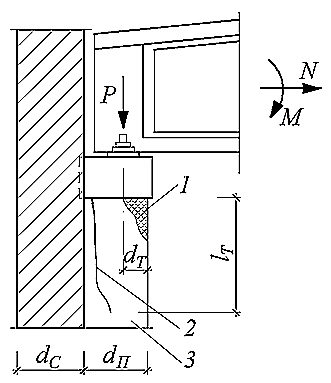
1 -краевое раздробление и сколы кладки под опорой; 2 -вертикальная трещина; 3 -пилястра
Рисунок 2 -Характерные случаи повреждения опорных участков пилястр каменных стен при опирании на них ферм и балок
где nп -коэффициент допустимой перегрузки принимают равным 1,15 для каменных конструкций.
Для конструкций, поврежденных трещинами, применение коэффициента nп не допускается.
Таблица 7
| Снижение несущей способности,% | Усиление конструкций |
|---|---|
| 0 - 5 | Не требуется |
| До 15 | Требуется при наличии трещин |
| До 25 | Требуется |
| До 50 | Требуется |
| Свыше 50 | Возможно при технико-экономическом обосновании или разборке |
Примечание -При снижении несущей способности конструкций на 15 % и более вследствие повреждения сечения трещинами, сколами, раздроблением и т. п., усиление конструкций обязательно независимо от значения действующей нагрузки.
8Усиление каменных конструкций
Элементы с продольным вертикальным армированием
Продольное армирование каменных конструкций применяют для повышения сопротивляемости кладки растягивающим усилиям и обеспечения монолитности и устойчивости отдельных частей и всего сооружения в целом.
При продольном вертикальном армировании каменных конструкций арматура укладывается снаружи под слоем цементного раствора или в штрабе кладки с заполнением штрабы раствором (рисунок 3).
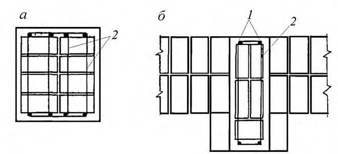
Рисунок 3 -Продольное армирование кирпичных конструкций (столбов, стен и др.)
0,1 -для сжатой продольной арматуры;
0,05 -для растянутой продольной арматуры.
При расчете элементов, работающих на внецентренное сжатие, расчетное значение сопротивления кладки принимают равным R ( - принимают по СП 15.13330).
N
где N -продольная расчетная сила;
-коэффициент продольного изгиба, принимаемый по СП 15.13330; mg -коэффициент, учитывающий влияние длительной нагрузки, (4.1 СП 15.13330.2012);
R -расчетное значение сопротивления кладки, принимаемое по СП 15.13330;
А -площадь сечения кладки;
Rsc -расчетное значение сопротивления продольной сжатой арматуры [3];
Аs -площадь сечения продольной арматуры.
Упругую характеристику кладки с продольным армированием принимают по таблице 2, как для неармированной кладки.
случай 2 -соблюдается условие: при любой форме сечения при прямоугольной форме сечения
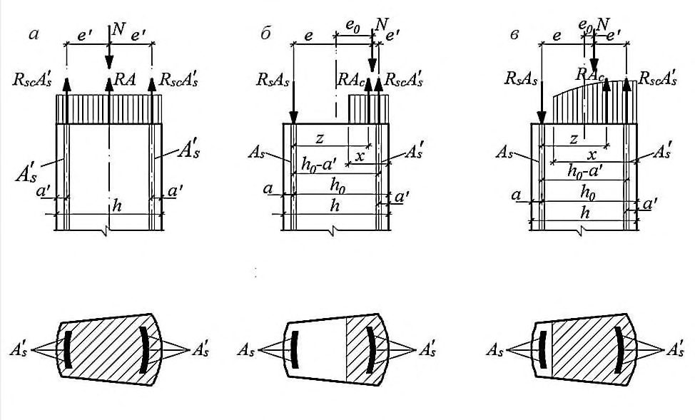
а -центральное сжатие; б -случай 1 S с < 0,8 S 0 ; в - случай 2 S с > 0,8 S 0
Рисунок 4 -Внецентренное сжатие армированной кладки
В формулах (17) -(23):
S c -статический момент сжатой зоны сечения кладки относительно центра тяжести растянутой или менее сжатой арматуры Аs ;
S 0 -статический момент всего сечении кладки относительно центра тяжести растянутой Аs или менее сжатой арматуры; х -высота сжатой зоны сечения [3].
Статический момент S 0 при любой форме сечения определяется по формуле
где А -площадь сечения кладки; h 0 -рабочая высота сечения h 0 = h -а ; h -высота всего сечения; a -толщина защитного слоя со стороны арматуры А s ; у -расстояние от центра тяжести всего сечения до края наиболее сжатой грани. При прямоугольной форме сечения
СП 427.1325800.2018 б) при одиночной арматуре
При прямоугольном сечении
где b -ширина прямоугольного сечения.
Статический момент Sc зависит от формы и размеров сечения, положения нейтральной оси и защитного слоя. Формулы для расчета Sc и внецентренно сжатых элементов с продольной арматурой приведены в [3].
при этом положение нейтральной оси определяется по формуле
при этом положение нейтральной оси определяется по формуле
Высота сжатой зоны кладки должна во всех случаях удовлетворять условиям:
Примечание -Если прочность кладки при расчете на поперечную силу окажется недостаточной, необходима установка хомутов или устройство отгибов в арматуре, расчет которых производится в соответствии с СП 63.13330.
Комплексные элементы (элементы из каменной кладки, усиленные железобетоном)
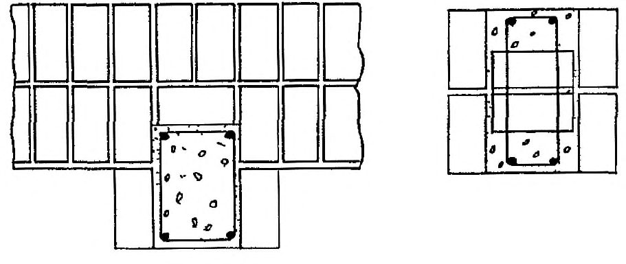
Рисунок 5 -Схемы сечений комплексных элементов
Для комплексных конструкций применяют бетон класса не выше В15.
N где N -продольная сила; mg -коэффициент, учитывающий влияние длительности нагрузки (СП 15.13330);
R -расчетное значение сопротивления кладки;
А -площадь сечения кладки;
Rb и Rsc -расчетные значения сопротивления бетона и арматуры при центральном сжатии, принимаемые по СП 63.13330;
Ab -площадь сечения бетона; s A -площадь сечения арматуры;
cs -коэффициент продольного изгиба комплексной конструкции [3] при упругой характеристике кладки
Приведенный модуль упругости комплексных элементов и приведенное временное сопротивление комплексного сечения определяются по формулам:
где E 0 k, Eb -начальные модули упругости кладки и бетона (для кладки приведен в [3], для бетона определяется по СП 63.13330);
Ik ; Ib -моменты инерции сечения кладки и бетона;
RU = 2 R -временное сопротивление (средний предел прочности) сжатию кладки;
Rub -нормативная призменная прочность бетона при сжатии, принимаемая по СП 63.13330.
[В формулах (38)-(42):](file:///C:/Program%20Files/StroyConsultant/Temp/1596.htm%23%C3%91%E2%80%94%C3%90%C2%BE%C3%91%E2%80%A2%C3%90%C2%BC%C3%91%E2%80%A6%C3%90%C2%BB%C3%90%C2%B0_55%23%C3%91%E2%80%94%C3%90%C2%BE%C3%91%E2%80%A2%C3%90%C2%BC%C3%91%E2%80%A6%C3%90%C2%BB%C3%90%C2%B0_55) b b k S R R S S + = 0 -статический момент площади комплексного сечения (приведенного к кладке) относительно центра тяжести растянутой или менее сжатой арматуры Аs ;
В случае 1 расчет производится по формуле
N ≤
При этом, если сила N приложена между центрами тяжести арматуры Аs и s A , то должно быть удовлетворено дополнительное условие
N ≤
При одиночной арматуре ( s A =0) расчет производится по формуле
bc b cs c S R R S S + = -статический момент площади сжатой зоны комплексного сечения относительно центра тяжести арматуры Аs ,
Skc и Sbc -статические моменты площадей сжатой части сечения кладки и бетона относительно центра тяжести арматуры Аs ;
Sk ;Sb и Ss -статические моменты площадей сечения кладки, бетона и арматуры А относительно центра тяжести арматуры Аs ;
Sk 1; Sb 1 и s S -статические моменты площадей сечения кладки, бетона и арматуры Аs относительно центра тяжести арматуры s A ; е и е -расстояния от точки приложения силы N до центра тяжести арматуры Аs и s A .
Если центры тяжести арматуры Аs и s A находятся на расстоянии более 5 см от граней сечения, то в формулах (41) и (42) статические моменты и эксцентриситеты е и е определяются относительно грани сечения.
При внецентренно сжатых элементах комплексных конструкций с большими эксцентриситетами (с расположением бетона с внешней стороны кладки), при которых соблюдается условие Sc < 0,8 S 0 , расчет производится по формуле
N
Положение нейтральной оси в этом случае определяется из уравнения
В формуле (44) знак «плюс» принимают, если сила N приложена за пределами расстояния между центрами тяжести арматуры Аs и s A ; знак «минус» -если сила N приложена между центрами тяжести арматуры Аs и s A .
При одиночной арматуре ( s A = 0) расчет производится по формуле
N
и положение нейтральной оси определяется из уравнения
[В формулах (43) -(46):](file:///C:/Program%20Files/StroyConsultant/Temp/1596.htm%23%C3%91%E2%80%94%C3%90%C2%BE%C3%91%E2%80%A2%C3%90%C2%BC%C3%91%E2%80%A6%C3%90%C2%BB%C3%90%C2%B0_60%23%C3%91%E2%80%94%C3%90%C2%BE%C3%91%E2%80%A2%C3%90%C2%BC%C3%91%E2%80%A6%C3%90%C2%BB%C3%90%C2%B0_60)
Acs -площадь сжатой зоны кладки;
Abc -площадь сжатой зоны бетона;
Scs,N -статический момент сжатой зоны кладки относительно точки приложения силы;
Sbs,N -статический момент сжатой зоны бетона относительно точки приложения силы. s
положение нейтральной оси определяется из уравнения
Высота сжатой зоны комплексного сечения должна во всех случаях удовлетворять условиям:
При этом значения S 0 и Sc , а также Scs и Sbc принимаются такими же, как при внецентренном сжатии, а плечо внутренней пары сил z принимают равным расстоянию от точки приложения равнодействующей усилий RAcs и RbAbs до центра тяжести арматуры Аs .
При одиночной гибкой арматуре ( s A = 0) расчет производится по формуле
и положение нейтральной оси определяется из уравнения
где Rtw -расчетное значение сопротивление кладки главным растягивающим напряжениям, принимаемое по СП 15.13330; b -ширина сечения; z -плечо внутренней пары сил при прямоугольном сечении, определяемое по формуле
В случае, когда прочность кладки при расчете на поперечную силу недостаточна, требуется установка хомутов или часть продольных стержней отгибается в соответствии с СП 63.13330.
Элементы, усиленные обоймой
Применяют четыре основных вида обойм: стальные, железобетонные, армированные растворные и из полимерных композитных материалов (раздел 9).
Основные факторы, влияющие на эффективность обойм: процент поперечного армирования обоймы (хомутами), прочность бетона или штукатурного раствора и состояние кладки, а также схема передачи усилия на конструкцию.
С увеличением процента поперечного армирования хомутами прирост прочности кладки растет непропорционально, а по затухающей кривой.
Кирпичные столбы и простенки с трещинами, усиленные обоймами, полностью восстанавливают свою несущую способность.
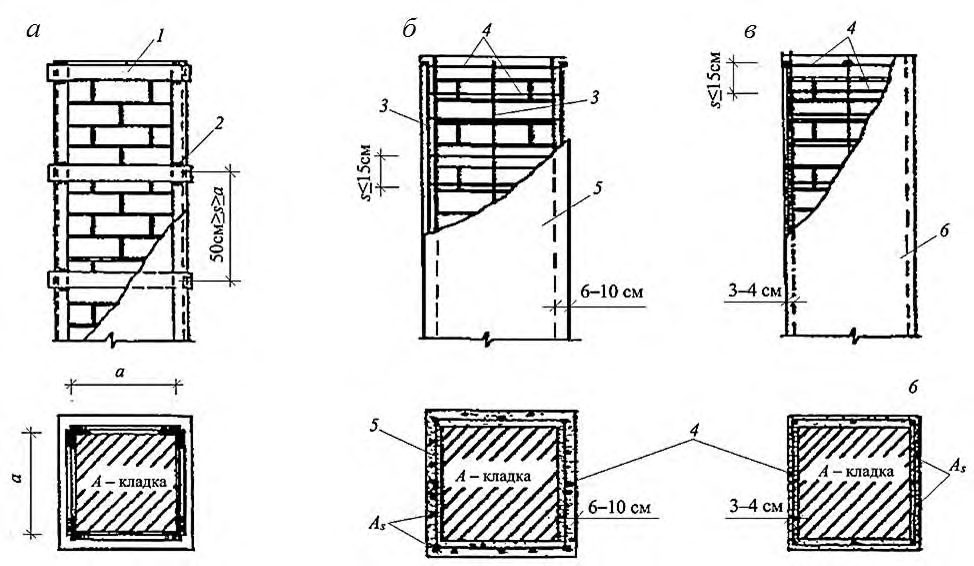
Рисунок 6 -Схема усиления кирпичных столбов обоймами
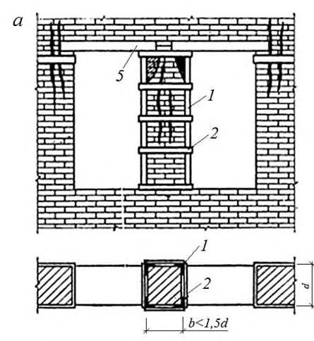
а -при ширине простенков в 1,5 d; б -то же при в 1,5 d ; 1 - уголок; 2 - планка; 3 - полоса; 4 - болт; 5 -перемычка
Рисунок 7 -Схема усиления простенков стальными обоймами
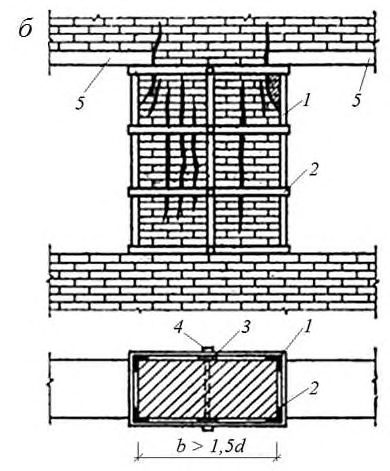
Рисунок 8 -Усиление столбов стальными и железобетонными обоймами
[В формулах (54) -(58):](file:///C:/Program%20Files/StroyConsultant/Temp/1596.htm%23%C3%91%E2%80%94%C3%90%C2%BE%C3%91%E2%80%A2%C3%90%C2%BC%C3%91%E2%80%A6%C3%90%C2%BB%C3%90%C2%B0_71%23%C3%91%E2%80%94%C3%90%C2%BE%C3%91%E2%80%A2%C3%90%C2%BC%C3%91%E2%80%A6%C3%90%C2%BB%C3%90%C2%B0_71)
N -продольная сила;
А -площадь сечения усиливаемой кладки;
A s -площадь сечения продольных уголков стальной обоймы или продольной арматуры железобетонной обоймы;
Аb -площадь сечения бетона обоймы, заключенная между хомутами и кладкой (без учета защитного слоя);
Rsw -расчетное сопротивление поперечной арматуры обоймы;
Rsc -расчетное сопротивление уголков или продольной сжатой арматуры;
-коэффициент продольного изгиба (при определении значение принимают как для не усиленной кладки); mg -коэффициент, учитывающий влияние длительного воздействия нагрузки (СП 15.13330); mk -коэффициент условий работы кладки, принимаемый равным 1 для кладки без повреждений и 0,7 - для кладки с трещинами; mb -коэффициент условий работы бетона, принимаемый равным 1 - при передаче нагрузки на обойму и наличии опоры снизу обоймы, 0,7 - при передаче нагрузки на
СП 427.1325800.2018 хомутами должно быть не более 15 см. Толщину обоймы назначают по расчету и принимают от 6 до 10 см (рисунок 6, б ).
N
при железобетонной обойме
N
(55)
при армированной растворной обойме
Коэффициенты и принимаются при центральном сжатии = 1 и = 1; при внецентренном сжатии (по аналогии с внецентренно сжатыми элементами с сетчатым армированием) определяются по формулам:
; обойму и отсутствии опоры снизу обоймы и 0,35 - без непосредственной передачи нагрузки на обойму;
-процент армирования хомутами и поперечными планками, определяемый по формуле
где h и b -размеры сторон усиливаемого элемента; s -расстояние между осями поперечных связей при стальных обоймах ( h s b , но не более 50 см) или между хомутами при железобетонных и штукатурных обоймах ( s 15 см).
Таблица 8
| Тип арматуры и характер передачи нагрузки на обойму | Расчетное значение сопротивления арматуры, МПа, для стали класса | Расчетное значение сопротивления арматуры, МПа, для стали класса |
|---|---|---|
| A240 | A400 | |
| Поперечная арматура | 150 | 190 |
| Продольная арматура без непосредственной передачи нагрузки на обойму | 43 | 55 |
| То же, при передаче нагрузки на обойму с одной стороны | 130 | 160 |
| То же, при передаче нагрузки с двух сторон | 190 | 240 |
Когда одна из сторон элемента, например, стена (рисунок 9), имеет значительную протяженность, то необходима установка дополнительных поперечных связей, пропускаемых через кладку и располагаемых по длине стены на расстояниях не более 2 d и не более 100 см, где d - толщина стены. По высоте стены расстояние между связями должно быть не более 75 см. Связи должны быть надежно закреплены. Расчет дополнительных поперечных связей производится по формуле (55), при этом коэффициент условий работы связей принимают равным 0,5.
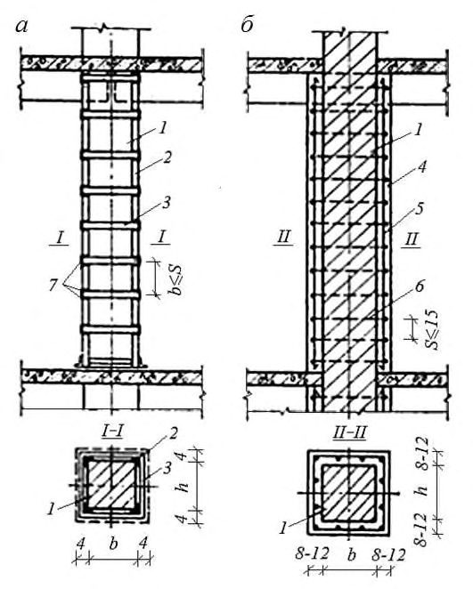
1 -металлическая сетка; 2 -дополнительные стержни, расположенные сверх сетки; 3 -хомуты (связи); 4 -бетон обоймы; 5 -кладка стены
Рисунок 9 -Схема усиления стены железобетонной обоймой
9Расчет каменных конструкций, усиленных полимерными композитными материалами по предельным состояниям первой группы (по несущей способности)
9.1Центрально-растянутые элементы
Расчет элементов каменных конструкций, усиленных внешним армированием из полимерных композитов, на прочность при осевом растяжении по неперевязанному сечению следует производить по формуле
где N - расчетная осевая сила при растяжении элемента, Н;
Rf - предел прочности при растяжении полимерного композита, Н/мм² ;
Af - площадь поперечного сечения полимерного композита, мм² .
9.2Центрально-сжатые элементы
Расчет элементов неармированных каменных конструкций при центральном сжатии, усиленных внешним армированием из полимерных композитов (рисунок 10), следует производить по формуле
N где N - расчетная продольная сила;
Rrf -расчетное значение сопротивления сжатию кладки, усиленной внешним армированием из полимерных композитов и определяемое по формуле
R
где R -расчетное значение сопротивления сжатию кладки, определяемое по СП 15.13330.2012 (таблицы 2-10);
- φ - коэффициент продольного изгиба, определяемый по СП 15.13330.2012 (таблица 7.2);
А - площадь сечения элемента; mg - коэффициент, учитывающий влияние длительной нагрузки и определяемый по СП 15.13330.2012 (таблица 20);
- ρ - коэффициент, принимаемый при пустотности кирпича (камня) до 20 % включительно -2, при пустотности от 20 % до 30 % включительно -1,5, при пустотности выше 30 % -1;
- μ - коэффициент поверхностного армирования полимерным композитом кладки усиливаемой стены, определяемый по формуле
где Sbd - площадь поперечного сечения полосы (бандажей) из полимерного композита толщиной δ bd и высотой hbd , определяемая по формуле
где Sw - площадь участка длинной стороны hw столба, приходящаяся на одну полосу из полимерного композита высотой hbd , определяется по формуле
где Rf -расчетный предел прочности при растяжении полимерного композита, определяемый по формуле (60).
Рисунок 10 -Схема усиления кирпичного столба обоймами (бандажами) из полимерных композитных материалов
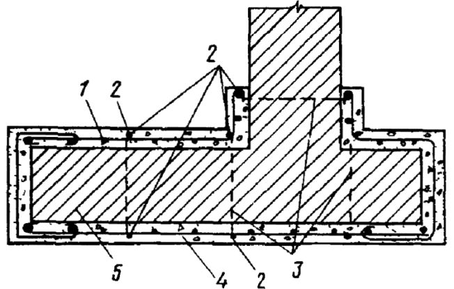
9.3Расчет внецентренно сжатых элементов, при действии момента из плоскости стены, на срез
10Усиление каменной кладки инъекцией раствора под давлением
Усиление кладки методом инъекции для повышения несущей способности кладки производится только в случае наличия в кладке множественных силовых трещин (рисунок 1, г ).
- инъекция раствора в кладку с низкой прочностью раствора в швах, без множественных трещин для повышения монолитности кладки;
- инъекция раствора в кладку с множественными трещинами для повышения монолитности кладки и ее расчетного значения сопротивления сжатию;
- инъекция раствора в кладку с отдельными трещинами для повышения монолитности кладки без увеличения ее расчетного значения сопротивления сжатию;
- инъекция раствора в кладку с множественными трещинами в сочетании с устройством косвенного армирования для повышения монолитности кладки и ее расчетного значения сопротивления сжатию.
При этом расчетное значение сопротивления кладки, усиленной инъекцией раствора под давлением, принимают по СП 15.13330 с коэффициентом условий работы mi для кладки простенков, столбов и стен с множественными трещинами от силовых воздействий, расположенных на расстоянии 15-20 см друг от друга (рисунок 1, г ):
- усиленных цементными и полимерцементными растворами mi = 1,1;
- усиленных раствором на основе метилметакрилата mi = 1,3;
- усиленных раствором на основе гидравлической извести с минеральными добавками mi = 1,0;
- усиленных раствором на основе эпоксидной смолы коэффициент mi определяется по графику на рисунке 11.
В остальных случаях коэффициент mi принимают равным 1,0, либо по результатам испытаний кладки на сжатие.
Рисунок 11 - Зависимость коэффициента mi от прочности кладочного раствора R 2 при инъекции раствора эпоксидной смолы для кладки простенков, столбов и стен с множественными трещинами от силовых воздействий, расположенных на расстоянии 15 -20 см друг от друга
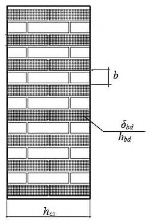
При усилении кладки с силовыми трещинами от местного сжатия наиболее эффективно усиление инъекцией в сочетании с косвенным армированием.
11Замена простенков и столбов новой кладкой
Временные крепления рекомендуется выполнять из дерева, стальных труб, стального проката и проектировать в виде конструкций, способных воспринимать массу передающихся на них вышерасположенных стен или других нагрузок.
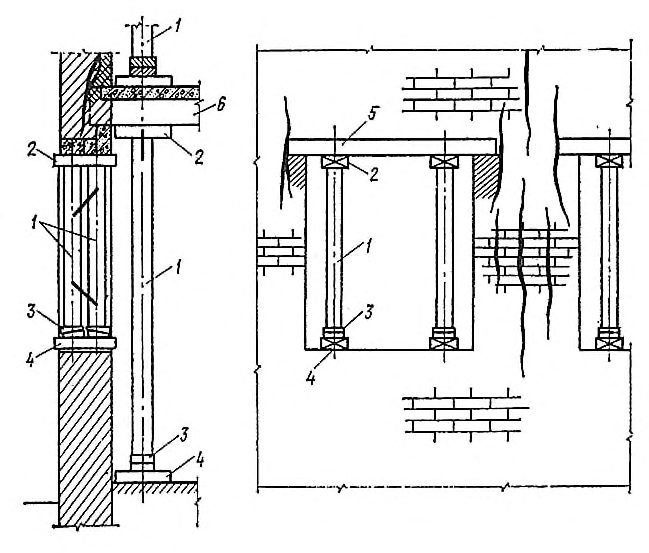
1 - стойка; 2 -подкладка; 3 -клинья; 4 -лежень; 5 - перемычка; 6 -балка
Рисунок 12 - Укрепление и разгрузка от массы перекрытий поврежденных простенков стойками
Для более плотного прилегания верха и низа стойки устанавливаются на клинья с последующей их подбивкой.
Кладку заменяемого простенка следует выполнять с плотным осаживанием кирпича для получения тонких швов кладки. В случае необходимости горизонтальные швы кладки армируются стальными сетками. Верх вновь возводимой кладки не доводится до старой на 3 -4 см с последующей зачеканкой зазора плотным цементным раствором марки не ниже М100. В отдельных случаях для обеспечения повышенной плотности примыкания новой кладки к старой допускается забивать в не отвердевший раствор плоские стальные клинья.
12Обеспечение пространственной жесткости зданий напряженными поясами, ненапрягаемыми связями и обвязками
Крепление стен напряженными поясами
Причины возникновения трещин в наружных многослойных облегченных стенах и методы их ремонта приведены в СП 327.13255800.
Наиболее простой и эффективный способ обеспечения пространственной жесткости и совместной работы конструкций -крепление стен в уровне перекрытий продольными и поперечными тяжами (рисунки 13 и 14). а - внутри здания; б - снаружи здания; в - разрез; г - вариант укладки тяжей в штрабу; 1 - тяж; 2 - муфта натяжения; 3 -металлическая подкладка; 4 - швеллер №16-20; 5 - уголок; 6 - цементный раствор марки М100
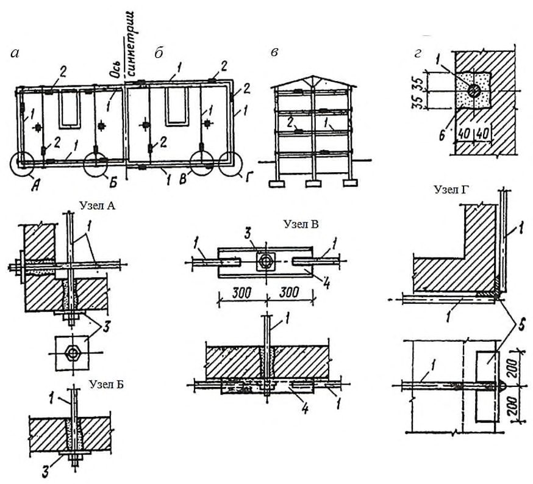
Рисунок 13 -Крепление стен металлическими тяжами в уровне перекрытий
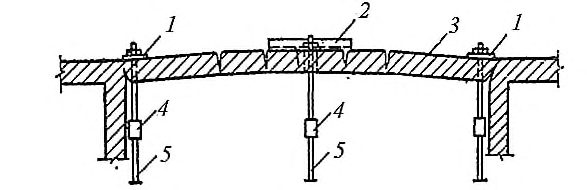
а - внутри здания; б - снаружи здания; в - разрез; г - вариант укладки тяжей в штрабу; 1 - подкладка; 2 -траверса из швеллера № 14 -16; 3 - стена; 4 натяжная муфта; 5 - тяж
Рисунок 14 -Крепление стен металлическими тяжами в уровне перекрытий
Тяжи укладываются по поверхности стен или в борозды сечением примерно 70×80 мм и после их натяжения заделываются цементным раствором.
На углах здания и выступах ставятся вертикальные уголки, обжимающие углы после натяжения поясов.
Натяжение поясов производиться посредством стяжных муфт одновременно по всему контуру.
Натяжение тяжей рекомендуется выполнять после предварительного нагрева их паяльными лампами или автогеном. Для тяжей, устанавливаемых зимой, в летнее время рекомендуется проводить дополнительное натяжение.
Крепление стен ненапрягаемыми связями и обвязками
Заделка трещин с шириной раскрытия 4 мм и более в стенах толщиной 38 см и более состоит в разборке по длине трещины кладки с двух сторон на глубину 1/2 кирпича и ширину не менее одного кирпича с последующей закладкой новым кирпичом в перевязку со старым (рисунок 16). В стенах и перегородках толщиной 25 см и менее в зоне трещины следует разобрать старую кладку и заменить ее новой или заполнить трещину инъекцией раствора под давлением.
Если несущая способность оставшейся кладки недостаточна, стены усиливаются заменой или утолщением кладки с перевязкой (вычинкой), а столбы и простенки обоймами.
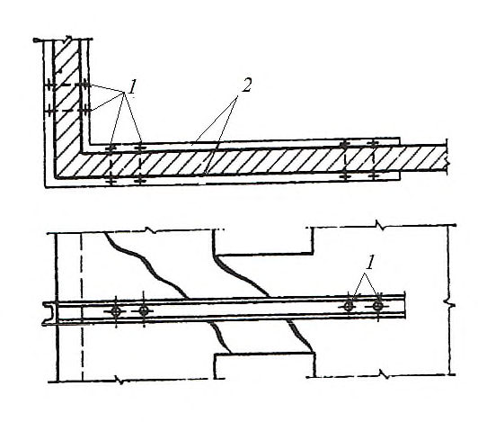
1 - стяжные болты диаметром 16-20 мм; 2 - металлические балки из швеллера № 16 -20
Рисунок 15 - Усиление угла металлическими балками
Рисунок 16 - Заделка трещин с разборкой
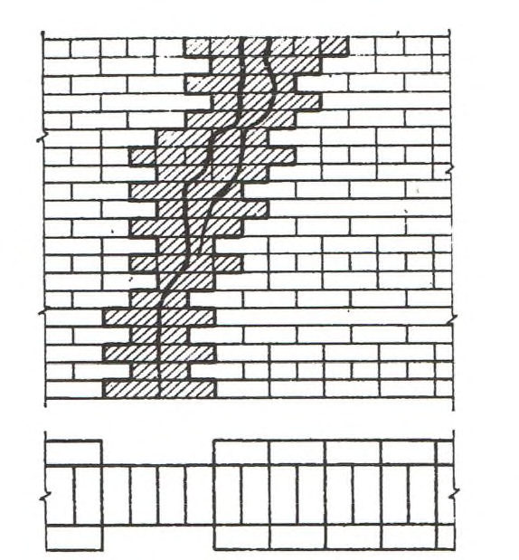
Поврежденные рядовые или клинчатые перемычки усиливаются подводкой стальных и железобетонных балок. Балки укладываются в штрабы, вырубленные с двух сторон стены, и стягиваются между собой болтами или хомутами (рисунок 17). Металлические балки покрываются сетками и оштукатуриваются.
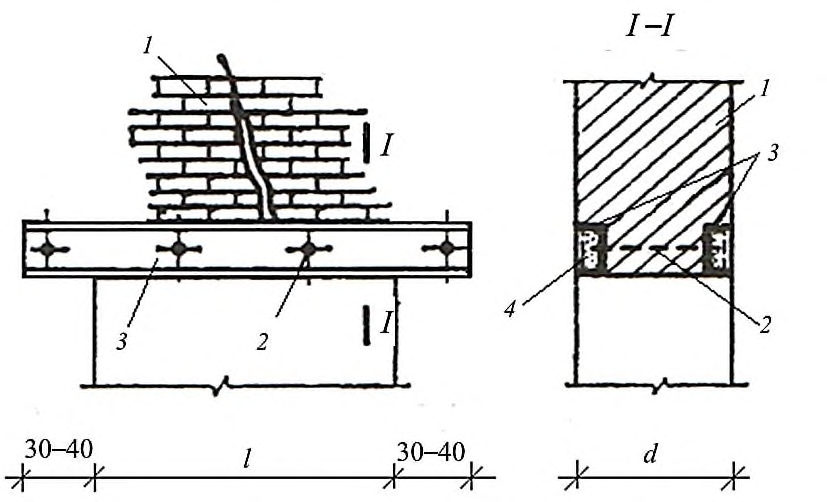
- кладка;
- швеллер;
- болт;
- штукатурка по сетке
Рисунок 17 - Усиление рядовых и клинчатых перемычек
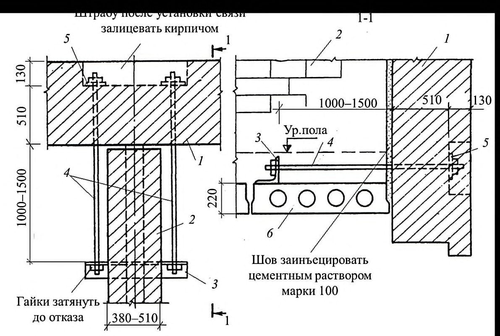
1 - продольная стена; 2 - поперечная стена; 3 -перекрытие; 4 - стальной тяж диаметром 20 -24 мм; 5 -уголок 75 × 75 мм; 6 - шайба 75 × 75 × 8 мм
Рисунок 18 - Крепление наружных стен к поперечным стальными связями
- 13 Повреждение и ремонт лицевого слоя несущих и самонесущих двухслойных стен зданий из кирпича и керамических камней
Причины повреждения лицевого слоя стен из двухслойной массивной кладки с перевязкой слоев прокладными (тычковыми) рядами
- 13.1 Методы расчета и усиления лицевого слоя облегченных наружных стен приведены в СП 327.1325800.
- 13.2 В случае, если лицевой слой в двухслойных стенах с соединением слоев перевязкой кладки напряжен более чем кладка внутреннего слоя (например, из-за большей его жесткости), напряжение в нем продолжает возрастать с течением времени вследствие деформаций ползучести кладки и температурных колебаний.
13.3 Существенное влияние на прочность лицевого слоя оказывает качество работ (ровность, плотность и одинаковая толщина швов в кладке и облицовке). Колебания в толщине швов в кладке слоев вызывают в перевязочных тычковых камнях значительные напряжения изгиба и среза, приводящие к нарушению связи слоев.
13.4 Разрушение лицевого слоя из керамических камней чаще наблюдается в стенах, внутренний слой которых выполнен из силикатного кирпича. Разрушение лицевого слоя, как правило, начинается с появления трещин в тычковых рядах, связывающих его с кладкой внутреннего слоя. Эти трещины наблюдаются на широких наружных откосах оконных и дверных проемов. Происходят выпучивание лицевой кладки и образование вертикальных зазоров между четвертью и коробкой, которое может вызвать обрушение лицевого слоя.
13.6 Появление вертикальных трещин в камнях простенков по фасаду свидетельствует о значительном перенапряжении кладки лицевого слоя. Увеличение деформаций ползучести кладки стены вызывает появление новых трещин и даже полное разрушение лицевого слоя.
13.7 Отслоение лицевого слоя кладки происходит быстро в случаях нарушения его связи с внутренним слоем из-за среза тычковых камней.
Ремонт лицевого слоя
13.8 Необходимость усиления простенков и крепления лицевого слоя зависит от напряжения в кладке внутреннего слоя и степени повреждения лицевого слоя.
Для установления степени напряжения производится проверочный расчет стен. В случаях отслоения лицевого слоя расчет следует выполнять без включения его площади в расчетное сечение. При расчете следует учитывать фактическую прочность кирпича и раствора, а не их проектные марки.
13.9 В случаях обнаружения волосных трещин в отдельных камнях лицевого слоя производится проверочный расчет стен (простенков). Если расчетом не выявлено перенапряжение кладки, то мероприятий по укреплению лицевого слоя проводить не следует.
13.10 При наличии трещин и перенапряжений в кладке необходимо установить наблюдение за ее состоянием и развитием трещин, поставить на трещины гипсовые маяки и не реже одного раза в месяц производить осмотр. В весенне-летний период под влиянием солнечной радиации в лицевом слое могут возникнуть дополнительные напряжения, увеличивающие опасность его повреждения. В этот период за лицевым слоем следует наблюдать особенно внимательно и осмотры производить чаще. При отслоении лицевого слоя или появлении новых трещин в лицевых камнях следует производить крепление лицевого слоя или усиление простенков согласно приведенному ниже.
13.11 При наличии отслоений лицевого слоя от внутреннего до 20 мм и при перенапряжении кладки (без учета лицевого слоя) не более чем на 20 %, должно производиться крепление отслоившегося лицевого слоя стальными связями.
Связи выполняются из стержней диаметром 10 -12 мм периодического профиля. Отверстия для связей -длиной 350 -400 мм под углом 30° к горизонтали (рисунок 19).
Отверстия просверливаются в местах пересечений горизонтального шва с вертикальным, по обе стороны которого камни расположены только ложками (но не тычками). Подготовленные отверстия промывают водой, заполняют с помощью ручного насоса или шприца клеем или полимерцементным раствором. Установка связей должна производиться с шагом 60 -80 см по горизонтали и вертикали.
Вариант примерного расположения стальных связей для крепления облицовки приведен на рисунке 20.
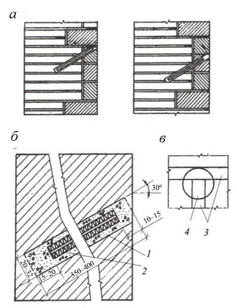
а - места установки стержней для крепления камней; б - детали заделки стержней для крепления облицовки; в -место высверливания отверстия в стене; 1 - цементно-песчаная паста; 2 - стержень периодического профиля диаметром 10 -14 мм; 3 -швы облицовки; 4 - высверливаемое отверстие
Рисунок 19 - Крепление поврежденной облицовки к стене
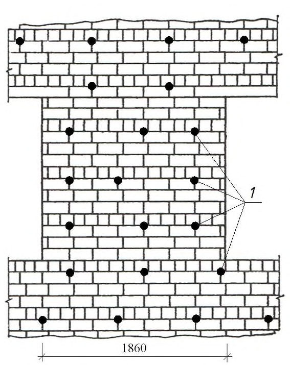
1 стержень периодического профиля диаметром 10-14 мм
Рисунок 20 - Вариант примерного расположения металлических стержней для крепления основного типа облицовки (три ряда ложков, один ряд тычков)
Зазоры между кладкой стены и облицовкой рекомендуется заинъектировать цементным раствором не ранее чем через семь суток после установки связей.
Усиление кладки методом инъекции производится в соответствии с разделом 10.
13.12 Крепление кладки лицевого слоя рекомендуется производить захватками по ширине до 5 м и высоте не более 2 м с соблюдением техники безопасности.
К работе по креплению лицевого слоя в вышележащей захватке следует приступить не ранее чем через сутки после выполнения работ в нижележащей захватке.
13.13 При разрушении кладки лицевого слоя или ее отслоении от кладки внутреннего слоя более чем на 20 мм и при перенапряжении кладки (определяется расчетом без учета лицевого слоя) не более чем на 20%, лицевой слой необходимо заменить.
13.14 Вновь выложенную кладку лицевого слоя следует укреплять металлическими стержнями (13.11) с прокладкой стальной сетки в горизонтальных швах кладки в местах установки связей и креплением их к сетке.
14Временные усиления поврежденных конструкций
Усиление стен и перегородок подкосами и тяжами
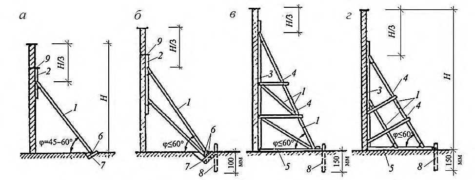
Рисунок 21 - Схемы крепления отклонившихся и выпучившихся стен подкосами
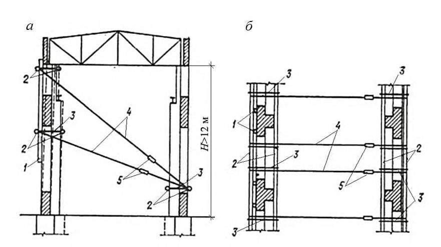
а - поперечное сечение; б - горизонтальное сечение; 1 - стойка; 2 -поперечина; 3 -проволочные скрутки диаметром 5 -6 см или стальные уголки; 4 -тяж диаметром 16 мм; 5 - натяжные муфты
Рисунок 22 - Крепление отклонившейся или выпучившейся стены тяжами (расчалками)
При отсутствии возможности постановки растяжек с двух сторон здания следует осуществлять одностороннее крепление стен растяжками. При этом для придания зданию большей жесткости между продольными стенами устанавливаются диафрагмы в виде подкосно-раскосной системы.
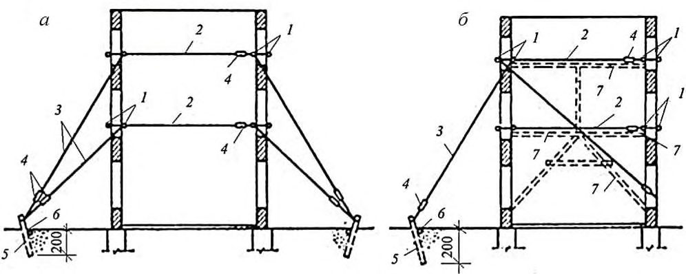
Рисунок 23 - Крепление стен растяжками
1 - стойка; 2 -распорка; 3 -расшивка; 4 -лежень; 5 - поперечина; 6 - расчалка диаметром 16 мм; 7 -крепление стоек стальными скрутками или уголками
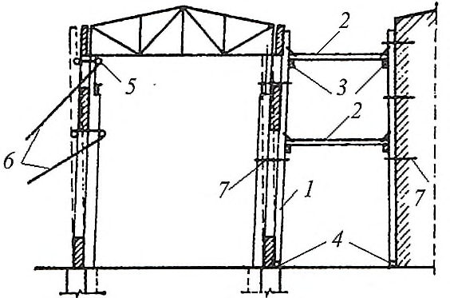
Рисунок 24 - Крепление наклонившейся стены к стенам устойчивых зданий или сооружений с помощью распорок
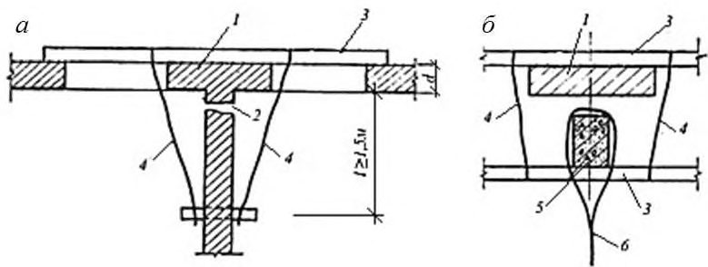
а - к поперечной стене; б - к колонне; 1 - простенок; 2 -трещина; 3 -поперечина; 4 проволочная скрутка или уголок; 5 -колонна; 6 - растяжка (расчалка) диаметром 16 мм
Рисунок 25 - Крепление отслоившихся или выпучившихся стен
Крепление стен, перегородок, перемычек и опор временными конструкциями
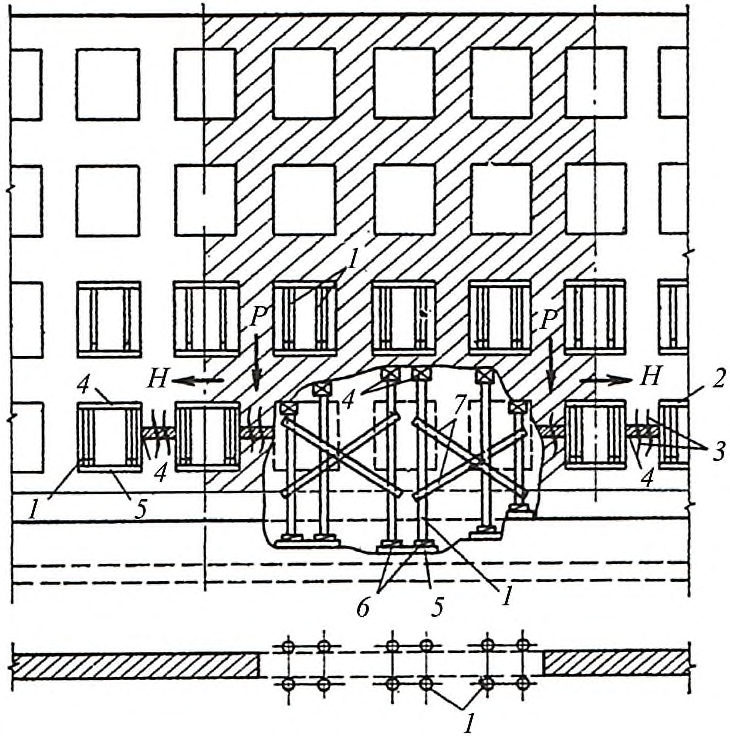
Рисунок 26 - Временные крепления стен
При этом должна быть предусмотрена возможность последующего восстановления поврежденной кладки без удаления временного крепления.
Стойки следует устанавливать по возможности ближе к опорам ферм и балок.
При подведении стоек под нижние пояса ферм следует предусматривать дополнительные распределяющие подкладки, исключающие возможность изгиба нижних поясов ферм.
Число временных стоек устанавливается расчетом. В многоэтажных зданиях оси стоек и столбов по этажам должны совпадать.
15Расчет прочности бандажей и тяжей, обеспечивающих устойчивость стен и фрагментов здания, разрезанных деформационными трещинами
- по прочности горизонтальных бандажей из стальных элементов или полимерных композитных материалов, стальных тяжей, перекрывающих трещину, растяжению;
- прочности анкеровки полос из композитного материала к основанию из кирпичной (каменной, блочной) кладки.
Nf ≤ Nc
где Nf -суммарное растягивающее усилие, действующее по направлению, перпендикулярному к направлению трещины и воспринимаемое бандажами или тяжами, расположенными на двух стенах, определяемое по формуле
N
где h - расстояние от основания стены до бандажа или тяжа;
М - опрокидывающий момент внешних сил;
Р - собственный вес стены;
N - вертикальное усилие, приложенное к стене; t толщина стены;
- Nc -суммарная несущая способность на растяжение двух расположенных на противоположных стенах бандажей или тяжей.
Рисунок 27 -Схема усиления кладки стены с трещинами от опрокидывания
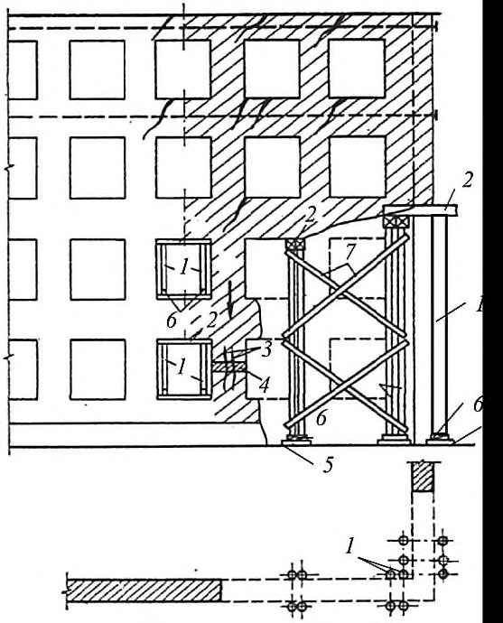
Библиография
- [1] Федеральный закон от 30 декабря 2009 г. № 384-ФЗ «Технический регламент о безопасности зданий и сооружений»
- [2] СП 13-102-2003 Правила обследования несущих строительных конструкций зданий и сооружений
- [3] Пособие по проектированию каменных и армокаменных конструкций (к СНиП II22-81)